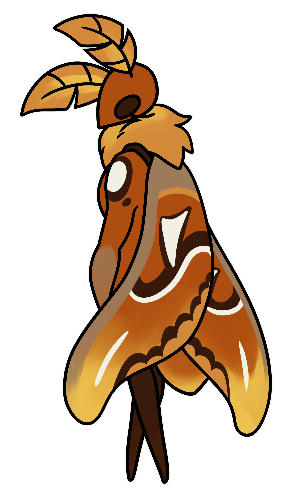
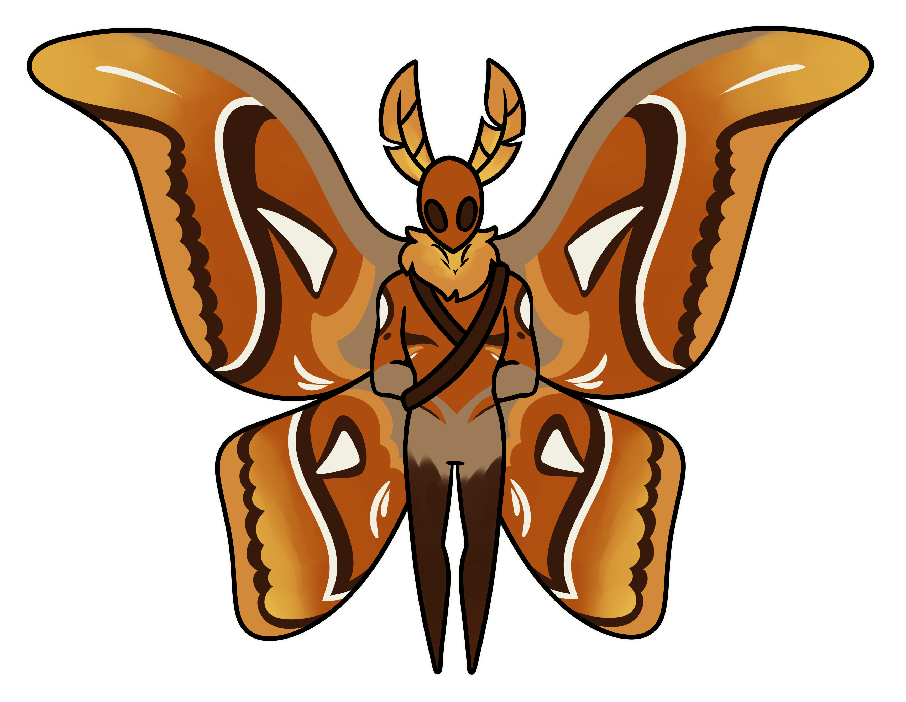
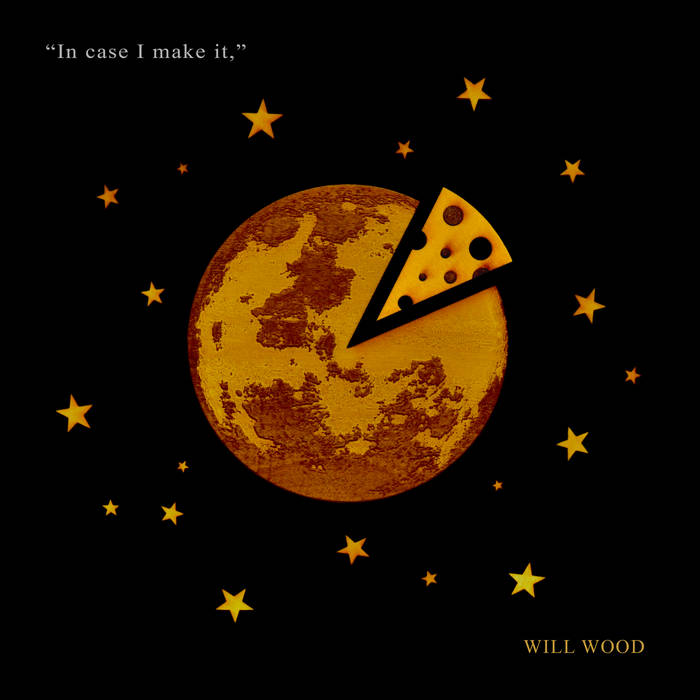

BASICS
Name: Venera
Age: Young Adult
Pronouns: All
–
- Stubborn
- Spiteful
- Proud
- Blunt
- Aggressive

PERSONALITY
Venera's blunt. A childhood of neglect and tragedy has left her bitter and aggressive, rarely pulling her punches. Her walls are built up high enough that nobody would have a chance of climbing them, ensuring nobody would be able to get close again. Anybody that shows her kindness is met with anger, and she despises those who pity her. She doesn't need anybody's pity. She can handle herself, and she doesn't need the help of anyone else.
The one exception to this is in the case of the mothkin's history. She is desperate for any information on the Radiance, on the location of the Dreamnail, and the study of dream magic. If she meets anyone who might have even the slightest bit of information that she hasn't already collected, she would do anything to get that information from them. If someone had the Dreamnail and she thought she could defeat them, she would not hesitate to become violent. She craves the light of the Radiance, and is painfully jealous that she never got the chance to learn dream magic or wield the Dreamnail.
Her storytelling habits also reflect how she sees the world. Everything is black and white, one side is all good, one side is all bad. Anything that threatens that is met with firm denial, and it would take a miracle to break that belief.


Cicada Days
Will Wood
1:11 / 4:10
ABILITIES & SKILLS
Venera's skills are lacking in many different areas. She has some experience in a variety of different areas, but due to the environment she was raised in, she lacks true skill in almost anything. She can cook for herself, but struggles with anything more complicated than fried meat and veggies. She can defend herself, but doesn't own a needle, and wouldn't be proficient with one even if she did. She's above average with her carpentry skills thanks to the training of her parental figure, Derii, but doesn't have tools or materials to put that to good use, and her social skills are abysmal.
There are only two things Venera truly excels at. She is excellent at both telling and coming up with stories, often improvising thrilling plotlines on the fly, though she rarely shares this talent with others, preferring to keep it to herself. She lives through her stories, and copes through them. Her other talent is her stealth. A lifetime of hiding away has made her excellent at stealing what she shouldn't have and hiding in places she shouldn't be.
BACKSTORY
Trigger Warnings: Severe Child Abuse, Neglect, Death
When Venera was born, her parents had worshipped the Pale King. They had known of the Radiance, and turned away from her, preferring to look to the Wyrm that had given the bugs of Hallownest a mind.
Unfortunately for Venera, her parents rarely used this gift to her benefit. They acted like teenagers, often locking her in her room while they left to enjoy the night. There were no windows, no toys, no food, just a half-made nest and an aging blanket, and she would sometimes spend days in there as her parents did their best to pretend she didn't exist. She often spent that time doing nothing but staring at the wall, imagining a universe where she could explore, learn, and get the childhood she wished she deserved. When she wasn't locked in her room, Venera spent every moment she could away from her parents, away from that house she considered a prison. She would spend time listening to the Seer about the history of her tribe, about the Radiance and the Pale King, fascinated by what could have been if the moths hadn't started worshipping the Pale King. Sure, he gave the bugs a mind, but in Venera's mind, the Radiance was more of a mother than her actual mother ever had been.
When she wasn't hovering around the Seer, listening closely for any new information about the history of the mothkin, she followed a moth by the name of Derii. He worshipped the Pale King like her parents, but he was kind, gentle. He taught her how to cook, how to use a needle to defend herself, but his greatest talent was telling stories. He would spin tales like a weaver would spin web, emotion in every word and passion in every sentence. Venera clung to his cloak, following him like a shadow as he did his daily tasks. He was a carpenter by trade, and he taught Venera how to follow in his steps. She got hurt more than once, but each time, Derii would softly comfort her, wrap her injury, and teach her how to take care of it herself if he was ever absent.
Every time she had to return to her room after spending the day with Derii, her mind would weave stories, entangling the history the Seer told her of with Derii's fantasies, imagining herself as a hero. Her parents would be amazed by her strength, finally lavishing her with the love she craved so desperately, and Derii would be proud. The Radiance herself would be impressed by Venera's might, and the Pale King would concede victory to her, and everything would be perfect...
And then the door to her bedroom opened, and her fantasy vanished with the shadow that her parents cast over her.
When Venera told her parents she wanted to stay with Derii, they did not fight. They did not cry. They weren't worried. They weren't even mad. If anything, they seemed relieved. Venera took her blanket and she left to find the carpenter, and Derii took her in. He was worried about her parents, concerned about how easily they seemed to give up the daughter, but he focused on making sure Venera felt safe with him. Over time, Derii slowly teased out the details of how Venera's parents treated her, and he seemed horrified with every new addition. "You did not deserve that," he repeated, over and over again, and Venera slowly, slowly, began to believe it.
Venera was not alive during the rise of the infection as Hallownest reached its peak. By now, the Radiance had already been sealed away, the Pure Vessel wrapped in chains and the Dreamers lay sleeping. But despite the Pale King's promise of immortality, the infection did not vanish. It lurked in every corner, and when the Pale King vanished, Venera was furious. Derii clung to his belief in the Wyrm, but Venera, young and angry and spiteful, felt rage every time she heard his name. The Radiance was still there, still breathing and reaching out, desperate for freedom, Venera knew, and yet the Pale King her tribe had turned to was gone. Why did they worship him, and not their creator? Why that pale imitation of her light?
It did not matter that it was an infected bug that killed Derii. Venera screamed and cried and mourned him, but it was not the Radiance's fault, not in her mind. It was the Pale King, the one who had locked that magnificent light away and abandoned them all. It was his fault Derii had died, and it was his fault she was forced to return to that solitary house with her parents. "Too young to care for herself," the other members of her tribe said, as if being in that light-forsaken room was better than exploring the world that Hallownest had to offer. If the Radiance was free, surely she would take in Venera, surely she would care for her, surely she would blind her parents with her light and show them who truly deserved to be worshipped.
She did not stay with her parents for long. She knew what it was like to be truly cared for, and she ached for it again. She ransacked the remnants of Derii's home and left the other moths behind, fleeing into the depths of Hallownest in her search for anything else.
The children of Unn were kind enough to let her reside in Greenpath, and she kept to herself. Her worship of the Radiance was passionate, crafting a small shrine within her makeshift home. She prayed by telling stories, the stories she would come up with in her head. Now, instead of telling stories of a hero adored by many, she told stories of vengeance, of retribution, of suffering deserved and a Radiance freed. She could feel the Radiance's light calling to her, and she was more than happy to accept. She wept with joy at the idea of being within the Radiance's brilliance, and with her hands clasped in front of her, she surrendered the mind the Pale King gave her, the mind she never wanted.
When she woke up, she did not know what had happened. She was dizzy, uncoordinated, and her shrine had toppled. But she couldn't feel the beauty of the Radiance's light any longer, and she wept.